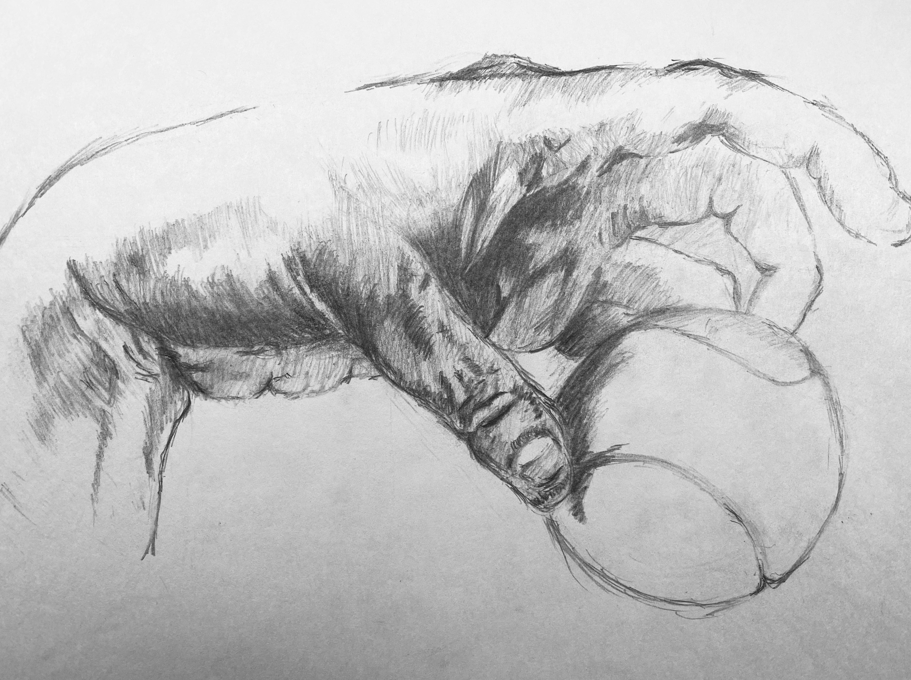
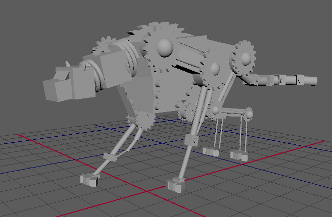
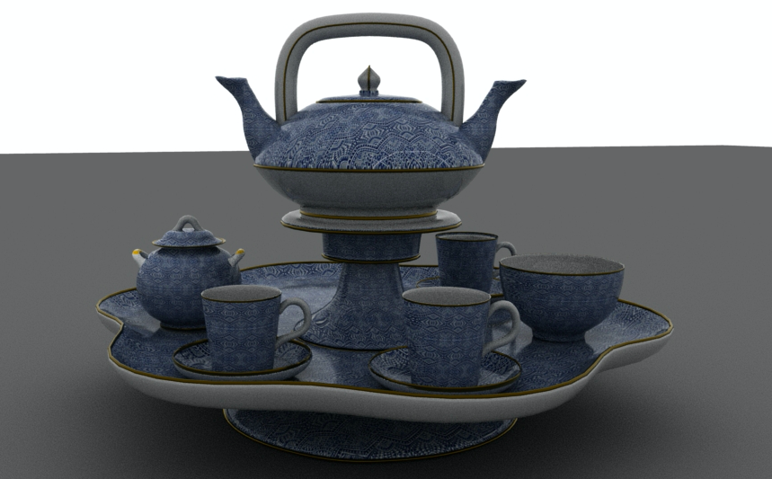

Gallery
Video
June 27, 2020
制作時間：3日間
制作ソフト：AfterEffect
映像を使って名古屋を盛り上げるをコンセプトにしている学生実行委員会ISIKIの紹介動画です。
CGをメインにして、明るさや楽しさを伝えるため疾走感のある感じにしました。
撮影編集全て1
人で行いました。
February 29, 2020
制作時間：2時間
制作ソフト：AfterEffect、Illustrator
企業様から案件をいただいた時に自分がどれくらいの技術があるのか見てもらうためのものです。
素材の日本地図はIllustratorを使い作成しました。
撮影編集全て１人でやりました。
September 29, 2019
制作時間：2週間
制作ソフト：AfterEffect、Illustrator
TYO学生アワードというコンテストに出典させていただいたものです。
”探す”をテーマにインターネットを使い、人を探すという内容になります。
ディレクターとして主に編集を担当しました。
November 4, 2019
制作時間：2日間
制作ソフト：AfterEffect
企業様からいただいた案件に用いたサンプルになります。
AfterEffectで３Dを使いグラフを立体的に見せました。
素材編集全て１人で行いました。
Design

February 18, 2020
制作時間：1時間半
制作方法：デッサン
学校の授業においてボールを持った手を描きました。
 November 9, 2019
November 9, 2019
制作時間：1時間半
制作方法：レンダリング
学校の授業においてハンディークリーナーを描いたものです。
背景を二色のコントラストにし疾走感を出しました。

November 28, 2019
制作時間：3時間
制作ソフト：Maya
Mayaを使い三角形や四角形などで動物のチーターを作成したものです。

November 9, 2019
制作時間：9時間
制作ソフト：Maya
学校の授業においてMayaを使いグループで作成したティーセットです。
主に形の形成色の配色を担当しました。